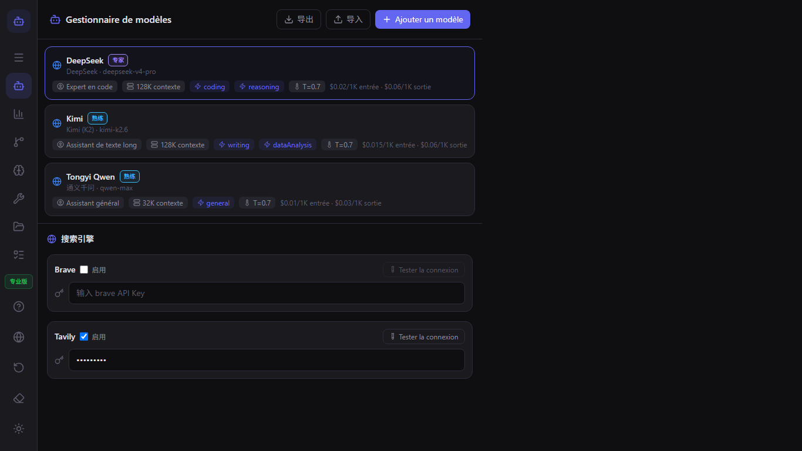
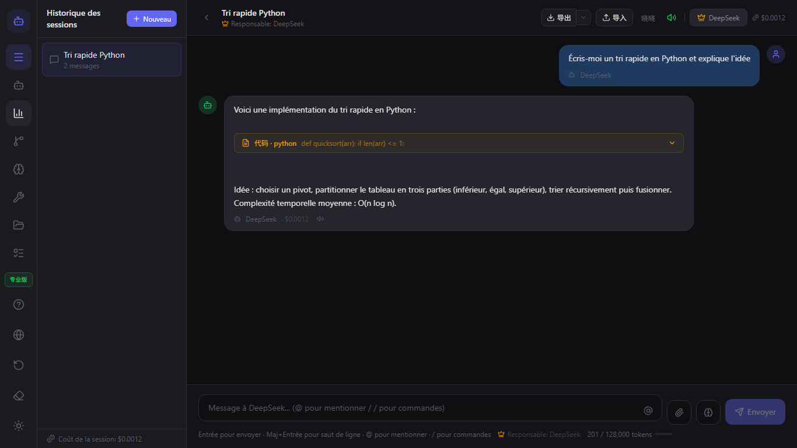
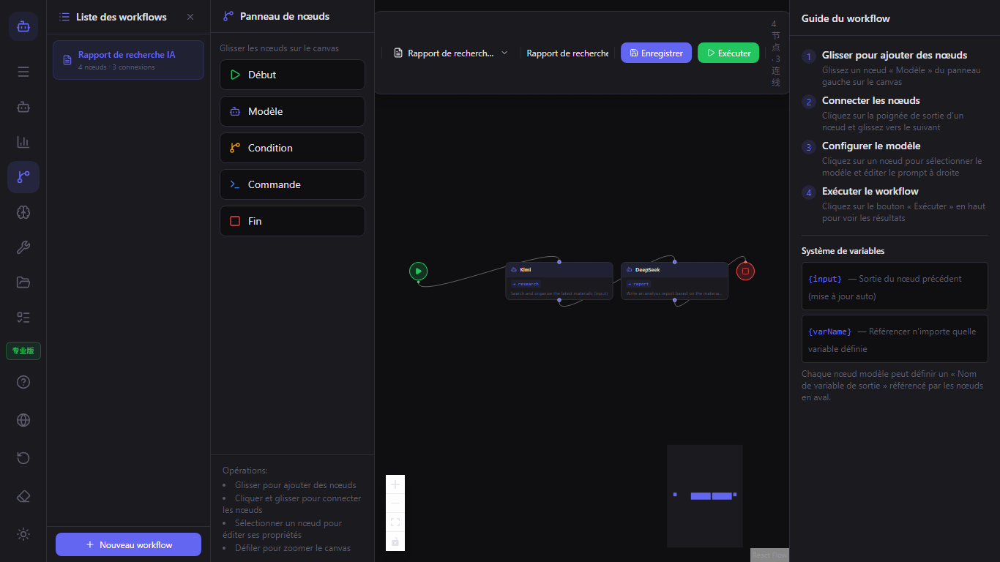
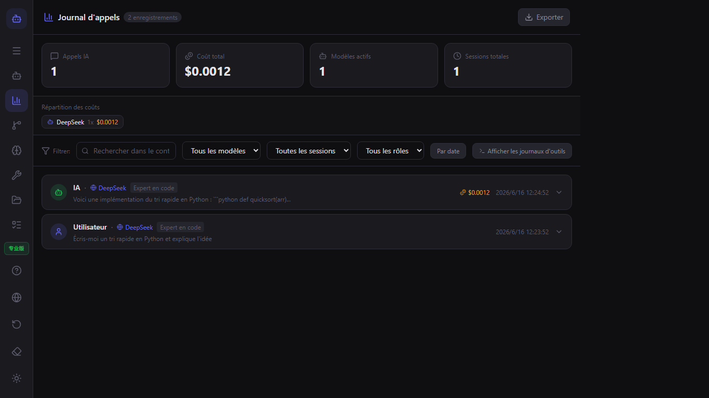

Guide utilisateur ModelFlow
Bienvenue dans ModelFlow. Ce guide couvre tout, de votre premier lancement aux workflows avancés multi-modèles.
Démarrage rapide
- Téléchargez ModelFlow depuis le Microsoft Store.
- Ouvrez l'application et terminez l'onboarding.
- Ajoutez votre premier modèle dans le Gestionnaire de modèles.
- Démarrez une conversation et tapez
@nom-du-modèlepour changer de modèle.
Gestion des modèles
Utilisez le Gestionnaire de modèles pour ajouter des modèles de texte, d'image, de vidéo et d'audio. Pour chaque modèle, vous pouvez définir le fournisseur, la clé API, le rôle, la fenêtre de contexte et les limites de coût.

Chat et mentions @
Tapez @ suivi du nom d'un modèle pour diriger la réponse suivante vers ce modèle. Vous pouvez enchaîner plusieurs modèles dans la même conversation.

Workflows
Ouvrez l'Éditeur de workflows pour construire des pipelines visuels. Glissez-déposez des nœuds de modèle, des nœuds de condition et des nœuds de commande sur le canevas, puis connectez-les.

Plugins
ModelFlow prend en charge les plugins vérifiés et les plugins communautaires. Installez des plugins depuis le Gestionnaire de plugins ou créez les vôtres.

CLI et outils locaux
Les modèles peuvent exécuter des commandes locales, lire des fichiers et lister des répertoires. Tapez /tool dans le chat ou ajoutez un nœud de commande à un workflow.

Journal d'appels et coûts
Le Journal d'appels enregistre chaque appel IA, chaque exécution d'outil, l'utilisation des tokens et le coût estimé. Exportez les journaux pour analyse.

Paramètres et confidentialité
ModelFlow est conçu pour être local en priorité. Vos sessions, configurations de modèles et plugins sont stockés sur votre machine. Changez la langue, l'espace de travail et exportez vos données dans les Paramètres.